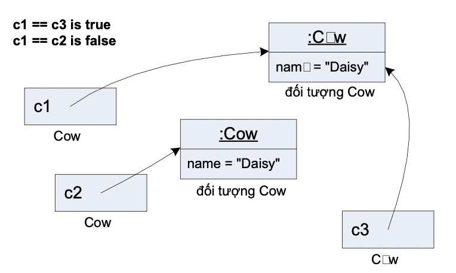

Cũng tương tự như phép gán, các phép so sánh == và != đối với các biến tham chiếu so sánh chuỗi bit nằm trong các biến đó. Ta biết rằng chuỗi bit của hai tham chiếu sẽ giống hệt nhau nếu chúng cùng chiếu tới một đối tượng. Nói cách khác, so sánh hai biến tham chiếu là kiểm tra xem chúng có trỏ tới cùng một đối tượng hay không. Các phép so sánh tham chiếu không hề so sánh nội dung đối tượng mà tham chiếu chiếu tới. Trong ví dụ Hình 4.5, c1 và c3 bằng nhau vì chúng chiếu tới cùng một đối tượng. Còn c1 và c2 khác nhau vì chúng chiếu tới hai đối tượng nằm tại hai chỗ khác nhau trong bộ nhớ, bất kể hai đối tượng đó có "giống nhau" về nội dung hay không.
Hình 4.5. So sánh tham chiếu.
Các phép so sánh lớn hơn, nhỏ hơn không có ý nghĩa và không thể dùng cho các kiểu tham chiếu đối tượng.
Để so sánh nội dung của các đối tượng, ta có những cách khác sẽ được bàn đến trong những chương sau (các mục 8.5 và 13.5).